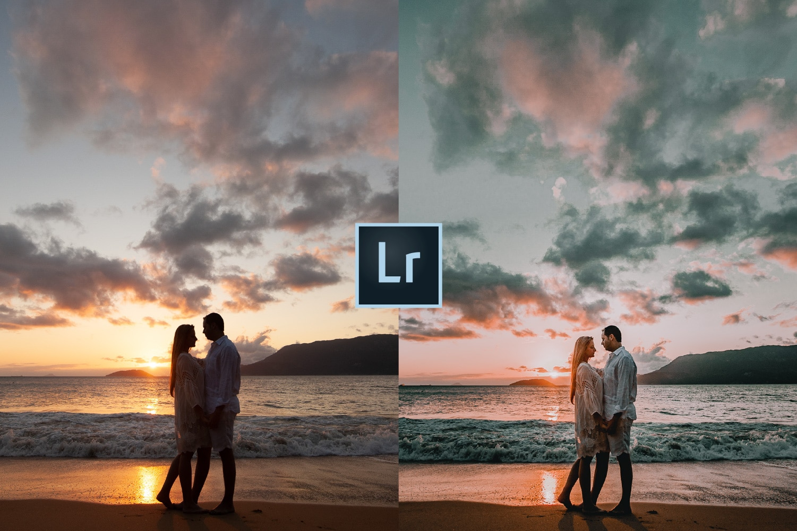
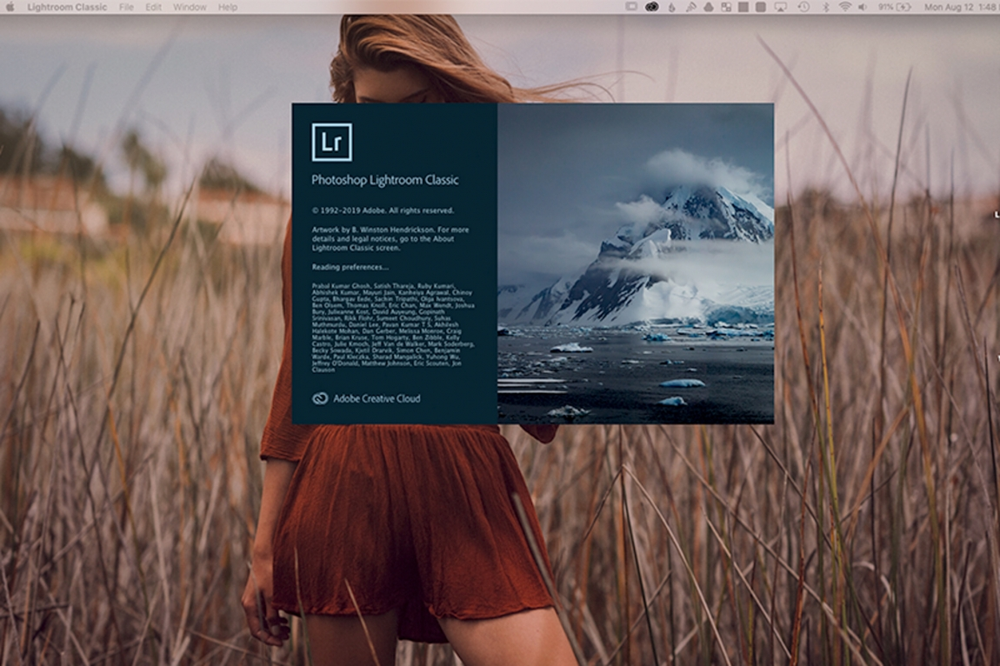
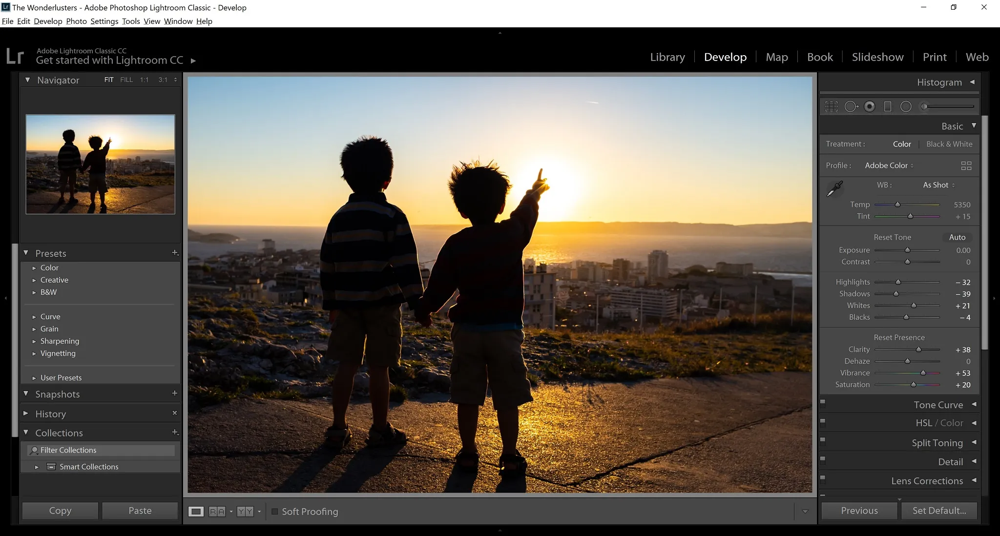
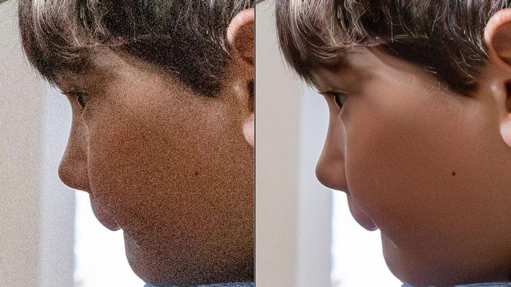

| LIGTHROOM |
é uma biblioteca e ferramenta de desenvolvimento que permite editar, organizar, armazenar e compartilhar suas fotos
|  | O Lightroom é mais um dentre os diversos programas da Adobe. Seu principal objetivo é tratar imagens, corrigindo erros nas fotos ou modificando detalhes de acordo com a vontade do fotógrafo. Um dos maiores motivos que o tornam o queridinho dos profissionais de fotografia é que ele permite editar imagens em RAW. |
|  | é um dos componentes do pacote Adobe especializado em edição de imagens rápida e armazenamento de imagens digitais. Com a plataforma, você poderá editar suas fotos de maneira profissional, tanto no seu celular, quanto em seu computador. |
| |
Baixe e abra o aplicativo Lightroom (Android) ou (iOS); Caso seja o seu primeiro acesso, faça login com uma conta Facebook, Google ou Apple; Toque no ícone azul de paisagem e escolha a imagem que deseja editar; ... Com a imagem escolhida em destaque, explore os recursos de edição. |
|  |  |